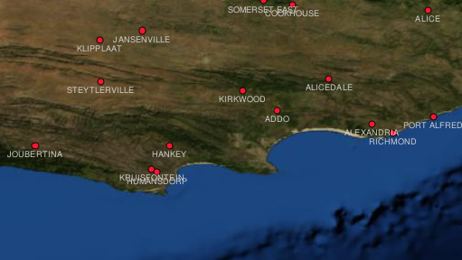
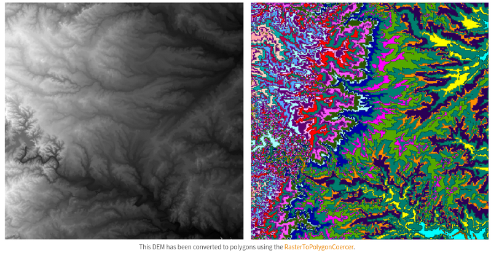

Raster Data Models¶
Last Time¶
Vector Attributes
Table Joins
Virtual Layers
Today¶
Raster Data Model
Conversions
Rasters in Public Policy/Social Sciences
¶
Raster Data Model¶
Rasters composed of a matrix of pixels (cells)
Each pixel contains a value representing the conditions for the area covered by that pixel

¶
Advantages of Rasters¶
Representing continuous spatial variation
More efficient than small polygons (in the vector model)

Georeferencing Rasters¶
Defines the correspondence between each pixel and location on the earth’s surface
Coordinates of top left pixel in the images
Size of each pixel in X and Y direction
Rotation angle
Raster in QGIS¶

Raster in QGIS¶

Sources of raster data¶
Remote Sensing Satellites¶
Remote Sensors¶

Planet¶

Earth Engine Timelapse¶
¶
Remote Sensing Imagery Resolution¶
Spatial Resolution
Spectral Resolution
Temporal Resultion
Spatial Resolution¶
How much area is represented in each pixel
- MODIS 500m x 500m
- SPOT5 satellites: 10m x 10m
- Areal Photography, drones: 50cm x 50cm
Remember: images with pixel size covering a small area are called high resolution images.
Spatial Resolution and Scale¶

Spectral Resolution¶
The number of spectral bands in which a sensor can collect reflected radiance
Choice depends upon application of use
Different types of ground targets have different spectral signatures

Temporal Resolution¶
Revisit Periods for Satellites
- SPOT5 - 3 days
- Modis - daily
- Airborne - as needed
¶
Conversions¶
Which Model?¶

Vector to raster conversion¶

Raster to vector conversion¶

¶
Rasters in GIS for Public Policy¶
Measures of environmental variables
Risk surfaces
Dasymetric mapping and areal interpolation
Environmental variables¶
Freeman et al. (2017) “Willingness to pay for clean air in China”

FEMA: Risk Surface¶

Dasymetric Mapping¶

NSF-Neighborhoods¶

¶

Interpolation and Harmonization¶
¶

Tobler¶

Tobler: Voting Precincts¶

Tobler: Dasymetric¶
National Land Cover Database¶
Next Up¶
Coordinate Reference Systems